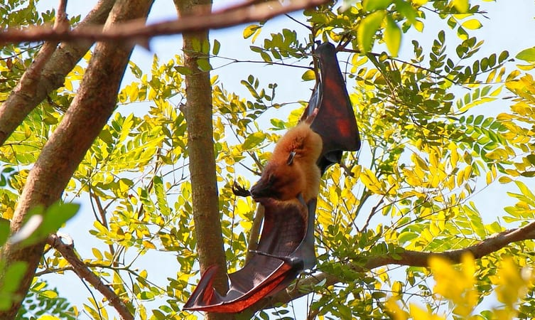

Mangalavanam Bird Sanctuary:
This ecologically sensitive area at the heart of Kochi is spread amidst 2.74 hectares of land. It has a shallow tidal lake connected to Kochi through a canal. It is popular for the many migratory birds that flock this place during the migratory season and also supporting the mangrove forests of this area. It is thus considered to be the green lungs of Kerala thereby keeping the pollution of the city at bay. The rich flora and fauna of the Mangalavanam Bird sanctuary are of interest to many nature enthusiasts and environmentalist alike. A whopping 72 different species of birds have been located in this area alone adding to the biodiversity of this place. Location: High Ct Rd, Ayyappankavu, Kochi. Timings: 10.00 am to 5.00 pm everyday.
Veeranpuzha Lake and Backwaters:

Veeranpuzha is one of the places to visit in Kochi, situated in the northern extension of Vembanad lake and is an extremely alluring lake along with a series of brackish lagoons and lakes lying parallel to the Malabar coast. Popularly known as the Vembanad lake, it is surrounded by lush green paddy fields swaying to the gentle breeze offering a mystic beauty of the place. The area is also a confluence of modern life amalgamating with life at the backwaters. Angling is a famous weekend activity enjoyed by the locals and is famous for cultivating Pokkali rice, a speciality of Kerala. Location: Vembanad Lake, Kochi.